Archibald Prize
Contents
Archibald Prize¶
import pandas as pd
import numpy as np
import matplotlib.pyplot as plt
from matplotlib.ticker import StrMethodFormatter
archies = pd.read_csv('data/archies.csv')
archies.head()
| YEAR | WINNER | GENDER | DOB | DOD | PORTRAIT TITLE | PORTRAIT GENDER | PORTRAIT OCC (Copy/Paste) | OCC. CATEGORY (1) | OCC. CATEGORY (2) | ANZSCO_1 | ANZSCO_2 | |
|---|---|---|---|---|---|---|---|---|---|---|---|---|
| 0 | 1921 | W B McInnes | Male | 1889.0 | 1939.0 | Desbrowe Annear | Male | NaN | Architect | Architect | Design, Engineering, Science and Transport Pro... | Professionals |
| 1 | 1922 | W B McInnes | Male | 1889.0 | 1939.0 | Professor Harrison Moore | Male | constitutional lawyer and dean of the law facu... | Lawyer / Academic | Lawyer | Legal, Social and Welfare Professionals | Professionals |
| 2 | 1923 | W B McInnes | Male | 1889.0 | 1939.0 | Portrait of a lady | Female | artist Violet McInnes | Artist | Artist | Arts and Media Professionals | Professionals |
| 3 | 1924 | W B McInnes | Male | 1889.0 | 1939.0 | Miss Collins | Female | daughter of Joseph Thomas Collins, a lawyer an... | Daughter | Person | NaN | NaN |
| 4 | 1925 | John Longstaff | Male | 1861.0 | 1941.0 | Maurice Moscovitch | Male | Russian-born actor | Actor | Actor | Arts and Media Professionals | Professionals |
archies['GENDER'].value_counts(normalize=True).plot.pie(autopct='%1.1f%%')
plt.show()
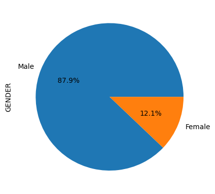
archies['PORTRAIT GENDER'].value_counts(normalize=True).plot.pie(autopct='%1.1f%%')
plt.show()
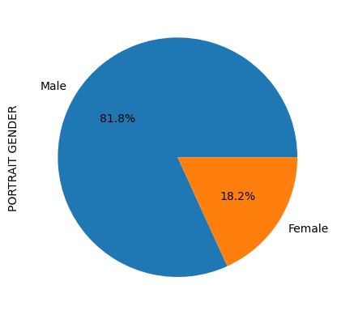
pd.crosstab(archies['GENDER'], archies['PORTRAIT GENDER'])\
.plot(kind='bar')
<AxesSubplot: xlabel='GENDER'>
archies['winning_age'] = archies['YEAR'] - archies['DOB']
print(pd.DataFrame(archies.winning_age.describe()).T,'\n')
archies['winning_age'].hist()
plt.title('Distribution of winning age, Median age: 44')
plt.show()
count mean std min 25% 50% 75% max
winning_age 99.0 46.484848 11.358143 27.0 38.0 44.0 52.0 77.0
Colour and Brightness¶
from IPython.display import Image
Image(filename='images/colorbydecade_python.png')

from IPython.display import Image
Image(filename='images/1920_byYear.png')
from IPython.display import Image
Image(filename='images/1930_byYear.png')

from IPython.display import Image
Image(filename='images/1940_byYear.png')
from IPython.display import Image
Image(filename='images/1950_byYear.png')
from IPython.display import Image
Image(filename='images/1960_byYear.png')

from IPython.display import Image
Image(filename='images/1970_byYear.png')

from IPython.display import Image
Image(filename='images/1980_byYear.png')
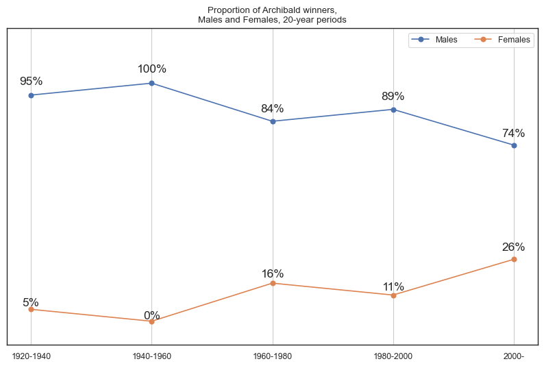
from IPython.display import Image
Image(filename='images/1990_byYear.png')

from IPython.display import Image
Image(filename='images/2000_byYear.png')
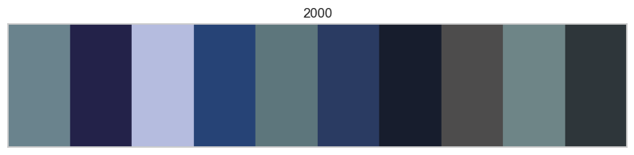
from IPython.display import Image
Image(filename='images/2010_byYear.png')

from IPython.display import Image
Image(filename='images/2020_byYear.png')
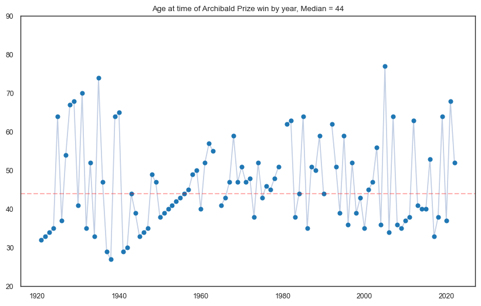
from IPython.display import Image
Image(filename='images/Brightness_python.png')

Participation over time¶
from IPython.display import Image
Image(filename='images/participationrates_python.png')
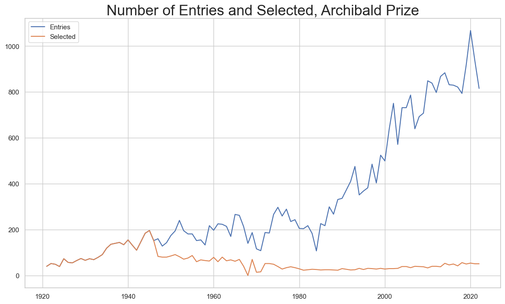
Prize Money¶
prize_money = pd.read_csv('data/Archibald_PrizeMoney2.csv', index_col=0)
plt.figure(figsize=(16, 8))
# Set the x-axis to the year column
x = prize_money.index
# Set the y-axis to the value column
y = prize_money['AUD_Equivalent']
# Create a line plot of the data
plt.plot(x, y)
# Add labels and a title
plt.xlabel('')
plt.title('Archibald Prize Money by Year\n', size=22)
plt.axvspan(1981, 1986, alpha=0.1, color='orange')
plt.text(1982.5, 103500, 'Katies', ha='center', va='center',size=14, rotation=90)
plt.axvspan(1986, 1988, alpha=0.1, color='yellow')
plt.text(1987.25, 96000, 'Grace Brothers', ha='center', va='center',size=14, rotation=90)
plt.axvspan(1988, 1992, alpha=0.1, color='green')
plt.text(1989.5, 96000, 'Coles Myer Ltd', ha='center', va='center',size=14, rotation=90)
plt.axvspan(1992, 2006, alpha=0.1, color='red')
plt.text(1994.5, 96000, 'State Bank/\nColonial Group', ha='center', va='center',
size=14, rotation=90)
plt.axvspan(2006, 2009, alpha=0.1, color='green')
plt.text(2007.5, 105000, 'Myer', ha='center', va='center',size=14,rotation=90)
plt.axvspan(2009, 2023, alpha=0.1, color='blue')
plt.text(2010.5, 105000, 'ANZ', ha='center', va='center',size=14,rotation=90)
# Format the y-axis labels as a monetary amount
plt.gca().yaxis.set_major_formatter(StrMethodFormatter('${x:,.0f} AUD'))
plt.yticks(size=14)
plt.xticks(size=14)
plt.ylim(0,110000)
plt.xlim(1915,2023)
plt.grid(axis='y')
# Show the plot
plt.show()
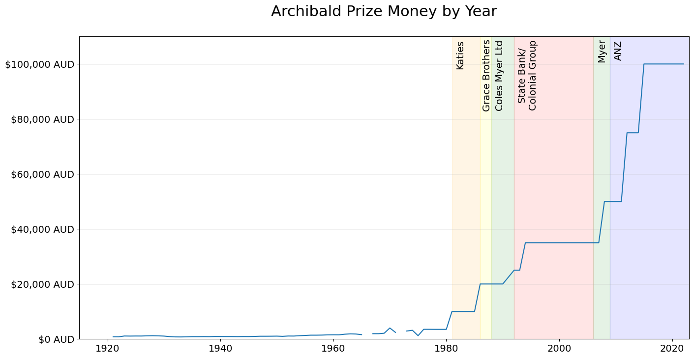
plt.figure(figsize=(16, 8))
missing_cond = (prize_money.index > 1964) & (prize_money.index < 1968)
missing_cond2 = (prize_money.index > 1970) & (prize_money.index < 1974)
# Set the x-axis to the year column
x = prize_money[prize_money.index < 1981].index
x2 = prize_money[missing_cond].index
x3 = prize_money[missing_cond2].index
# Set the y-axis to the value column
y = prize_money[prize_money.index < 1981]['AUD_Equivalent']
y2 = prize_money[missing_cond]['AUD_Equivalent'].ffill()
y3 = prize_money[missing_cond2]['AUD_Equivalent'].ffill()
# Create a line plot of the data
plt.plot(x, y)
plt.plot(x2, y2, linestyle='dashed',color='steelblue',alpha=0.5)
plt.plot(x3, y3, linestyle='dashed',color='steelblue',alpha=0.5)
# Add labels and a title
plt.xlabel('')
plt.title('Archibald Prize Money by Year, Before Official Sponsors (1921-1980)\n', size=22)
# Format the y-axis labels as a monetary amount
plt.gca().yaxis.set_major_formatter(StrMethodFormatter('${x:,.0f} AUD'))
plt.text(1930, 1250, 'GREAT\nDEPRESSION', ha='left', va='center',size=14)
plt.text(1939, 1150, 'WORLD\nWAR II', ha='left', va='center',size=14)
plt.text(1964, 1225, 'AUSTRALIAN\nDOLLAR\nINTRODUCED', ha='left', va='center',size=14)
plt.text(1969, 3900, 'DONATION OF $2000 FROM THE\nBICENTENARY CELEBRATIONS\nCITIZENS’ COMMITTEE', ha='right', va='center',size=14)
plt.yticks(size=14)
plt.xticks(size=14)
plt.ylim(1,4250)
# Show the plot
plt.show()
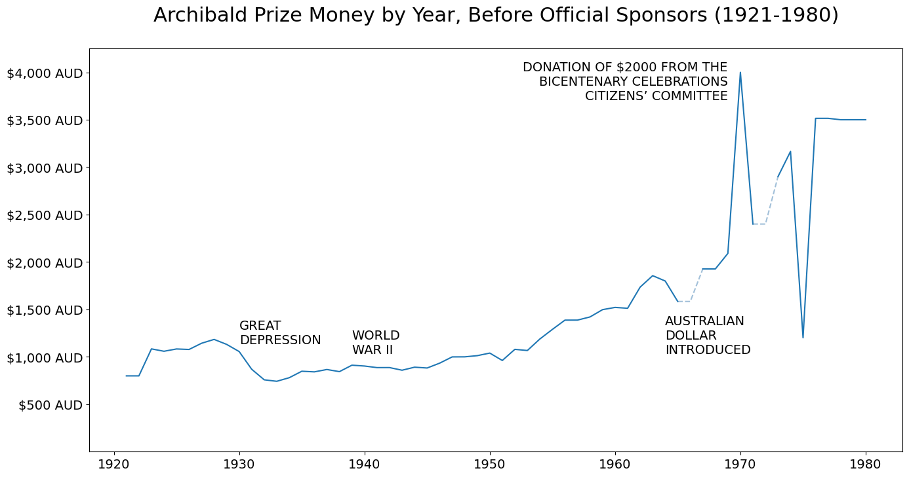
no_participants = pd.read_csv('data/no_participants_new.csv', index_col=0)
plt.figure(figsize=(16, 8))
missing_cond = (prize_money.index > 1964) & (prize_money.index < 1968)
missing_cond2 = (prize_money.index > 1970) & (prize_money.index < 1974)
# Set the x-axis to the year column
x = prize_money[prize_money.index < 1981].index
x2 = prize_money[missing_cond].index
x3 = prize_money[missing_cond2].index
x4 = no_participants[no_participants.Year < 1981]['Year']
# Set the y-axis to the value column
y = prize_money[prize_money.index < 1981]['AUD_Equivalent']
y2 = prize_money[missing_cond]['AUD_Equivalent'].ffill()
y3 = prize_money[missing_cond2]['AUD_Equivalent'].ffill()
y4 = no_participants[no_participants.Year < 1981]['Entries']
ax = plt.subplot(2, 1, 1)
# Create a line plot of the data
ax.plot(x, y)
ax.plot(x2, y2, linestyle='dashed',color='steelblue',alpha=0.5)
ax.plot(x3, y3, linestyle='dashed',color='steelblue',alpha=0.5)
beforesponsors = pd.merge(no_participants[no_participants.Year < 1981],
prize_money[prize_money.index < 1981].reset_index())
cor = beforesponsors['Entries'].corr(beforesponsors['AUD_Equivalent']).round(2)
# Add labels and a title
plt.xlabel('')
plt.title(f'Archibald Prize Money and Number of Entries by Year, \nBefore Official Sponsors (1921-1980), Corr: {cor}\n', size=22)
# Format the y-axis labels as a monetary amount
plt.gca().yaxis.set_major_formatter(StrMethodFormatter('${x:,.0f} AUD'))
plt.yticks(size=14)
plt.xticks(size=14)
plt.ylim(1,4250)
plt.grid(axis='x')
ax2 = plt.subplot(2, 1, 2)
ax2.plot(x4, y4, color = 'tab:orange')
plt.yticks(size=14)
plt.xticks(size=14)
plt.ylim(1,445)
plt.grid(axis='x')
# Show the plot
plt.show()
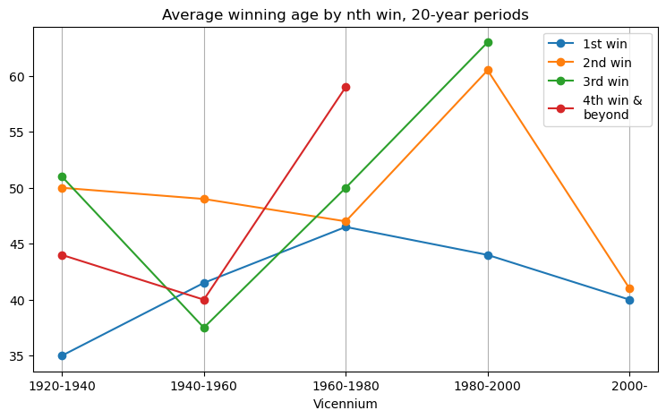
plt.figure(figsize=(16, 8))
# Set the x-axis to the year column
x = prize_money[prize_money.index >= 1981].index
# Set the y-axis to the value column
y = prize_money[prize_money.index >= 1981]['AUD_Equivalent']
# Create a line plot of the data
plt.plot(x, y)
# Add labels and a title
plt.xlabel('')
plt.title('Archibald Prize Money by Year, Sponsors/Partners Era (1981-)\n', size=22)
plt.axvspan(1980, 1986, alpha=0.1, color='orange')
plt.text(1980.75, 103500, 'Katies', ha='center', va='center',size=14, rotation=90)
plt.axvspan(1986, 1988, alpha=0.1, color='yellow')
plt.text(1986.5, 96000, 'Grace Brothers', ha='center', va='center',size=14, rotation=90)
plt.axvspan(1988, 1992, alpha=0.1, color='green')
plt.text(1988.5, 96000, 'Coles Myer Ltd', ha='center', va='center',size=14, rotation=90)
plt.axvspan(1992, 2006, alpha=0.1, color='red')
plt.text(1993, 96000, 'State Bank/\nColonial Group', ha='center', va='center',
size=14, rotation=90)
plt.axvspan(2006, 2009, alpha=0.1, color='green')
plt.text(2006.5, 105000, 'Myer', ha='center', va='center',size=14,rotation=90)
plt.axvspan(2009, 2023, alpha=0.1, color='blue')
plt.text(2009.5, 105000, 'ANZ', ha='center', va='center',size=14,rotation=90)
# Format the y-axis labels as a monetary amount
plt.gca().yaxis.set_major_formatter(StrMethodFormatter('${x:,.0f} AUD'))
plt.yticks(size=14)
plt.xticks(size=14)
plt.ylim(0,110000)
plt.xlim(1980.1,2023)
# Show the plot
plt.show()

plt.figure(figsize=(16, 8))
# Set the x-axis to the year column
x = prize_money[prize_money.index >= 1981].index
x2 = no_participants[no_participants.Year >= 1981]['Year']
# Set the y-axis to the value column
y = prize_money[prize_money.index >= 1981]['AUD_Equivalent']
y2 = no_participants[no_participants.Year >= 1981]['Entries']
# Create a line plot of the data
ax = plt.subplot(2, 1, 1)
ax.plot(x, y, lw= 2)
plt.axvspan(1980, 1986, alpha=0.05, color='orange')
plt.axvspan(1986, 1988, alpha=0.05, color='yellow')
plt.axvspan(1988, 1992, alpha=0.05, color='green')
plt.axvspan(1992, 2006, alpha=0.05, color='red')
plt.axvspan(2006, 2009, alpha=0.05, color='green')
plt.axvspan(2009, 2023, alpha=0.05, color='blue')
# Format the y-axis labels as a monetary amount
plt.gca().yaxis.set_major_formatter(StrMethodFormatter('${x:,.0f} AUD'))
plt.yticks(size=14)
plt.xticks(size=14)
plt.ylim(0,110000)
plt.xlim(1980.1,2023)
beforesponsors = pd.merge(no_participants[no_participants.Year >= 1981],
prize_money[prize_money.index >= 1981].reset_index())
cor = beforesponsors['Entries'].corr(beforesponsors['AUD_Equivalent']).round(2)
# Add labels and a title
plt.xlabel('')
plt.title(f'Archibald Prize Money and Number of Entries by Year,\nSponsors/Partners Era (1981-), Corr: {cor}\n', size=22)
# Format the y-axis labels as a monetary amount
plt.gca().yaxis.set_major_formatter(StrMethodFormatter('${x:,.0f} AUD'))
plt.yticks(size=14)
plt.xticks(size=14)
plt.grid(axis='x')
ax2 = plt.subplot(2, 1, 2)
ax2.plot(x2, y2, color = 'tab:orange', lw= 2)
plt.axvspan(1980, 1986, alpha=0.05, color='orange')
plt.axvspan(1986, 1988, alpha=0.05, color='yellow')
plt.axvspan(1988, 1992, alpha=0.05, color='green')
plt.axvspan(1992, 2006, alpha=0.05, color='red')
plt.axvspan(2006, 2009, alpha=0.05, color='green')
plt.axvspan(2009, 2023, alpha=0.05, color='blue')
plt.yticks(size=14)
plt.xticks(size=14)
plt.ylim(0,1190)
plt.grid(axis='x')
plt.xlim(1980.1,2023)
# Show the plot
plt.show()
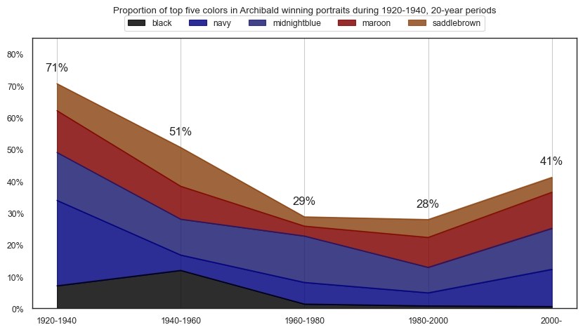
Start Age¶
# Archibald start age
pd.DataFrame(artist_stats[1].describe()).T
| count | mean | std | min | 25% | 50% | 75% | max | |
|---|---|---|---|---|---|---|---|---|
| 1 | 62.0 | 38.032258 | 10.850652 | 19.0 | 31.0 | 35.0 | 45.0 | 64.0 |
End Age¶
# Archibald end age
pd.DataFrame(artist_stats[2].describe()).T
| count | mean | std | min | 25% | 50% | 75% | max | |
|---|---|---|---|---|---|---|---|---|
| 2 | 62.0 | 59.209677 | 12.787208 | 33.0 | 48.0 | 61.0 | 68.75 | 81.0 |
Participation duration¶
# Archibald overall participation duration
pd.DataFrame(artist_stats['diff'].describe()).T
| count | mean | std | min | 25% | 50% | 75% | max | |
|---|---|---|---|---|---|---|---|---|
| diff | 62.0 | 21.177419 | 14.801998 | 3.0 | 11.0 | 16.5 | 31.75 | 62.0 |
Archibald Prize participation trajectory¶
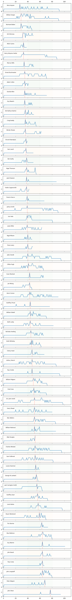
tt = artist_df.T
fig, axes = plt.subplots(tt.shape[1], 1,
figsize=(9, tt.shape[1]*1.25),
sharex=True)
# plot each col onto one ax
for idx,(col, ax) in enumerate(zip(tt.columns, axes.flat)):
colour = 'green'
if idx == 0: ax = ax.twiny()
if idx % 2: colour = 'orange'
tt[col].plot(ax=ax, rot=0)
ttt = pd.DataFrame(tt[col])
markthis = ttt[ttt[col] == 3].index[0]
ax.axvline(markthis, color='r', linestyle='--', lw=1, alpha=0.7)
ax.set_title(col,x=0.115, y=0.6, size=8.5)
ax.set_ylim(0,3.5)
ax.set_xlim(-1,111)
ax.axvspan(-1, 20, alpha=0.01, color=colour)
ax.axvspan(20, 40, alpha=0.025, color=colour)
ax.axvspan(40, 60, alpha=0.035, color=colour)
ax.axvspan(60, 80, alpha=0.025, color=colour)
ax.axvspan(80, 111, alpha=0.01, color=colour)

Who is in the portrait?¶
from matplotlib.pyplot import figure
archies['Decade'] = [ int(np.floor(int(year)/10) * 10)
for year in np.array(archies["YEAR"])]
t1 = pd.crosstab(archies['Decade'],archies['ANZSCO_1'])
figure(figsize=(8, 6))
t1.plot(marker="o", markersize=4)
plt.legend(ncol=1, bbox_to_anchor=(1, 0.7))
plt.show()
<Figure size 800x600 with 0 Axes>
from matplotlib.pyplot import figure
t2 = pd.crosstab(archies['Decade'],archies['ANZSCO_2'])
figure(figsize=(8, 6))
t2.plot(marker="o", markersize=4)
plt.legend(ncol=1, bbox_to_anchor=(1, 0.7))
plt.show()
<Figure size 800x600 with 0 Axes>
archies['ANZSCO_1'].value_counts().plot(kind='barh')
plt.show()

archies['ANZSCO_2'].value_counts().plot(kind='barh')
plt.show()
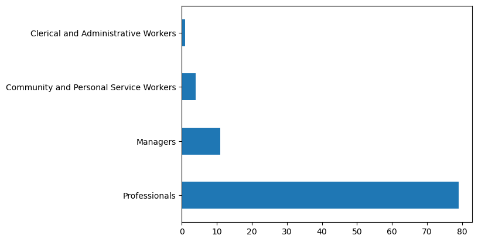